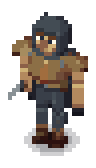
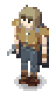
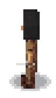
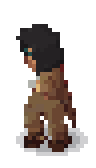

Tollbreaker Stone-Slinger
Tollbreaker Stone-Slinger is an elite of Milecairn (level 16).
Tollbreaker Stone-Slinger is an elite of Milecairn (level 16).
In the game
In the game the Tollbreaker Stone-Slinger is level 16, elite (a group's fight). It is found in Tollbreak Ridge. It can drop Ridge-Raider's Hood (13%) and Ridge-Raider's Pauldrons (13%).
Gallery







